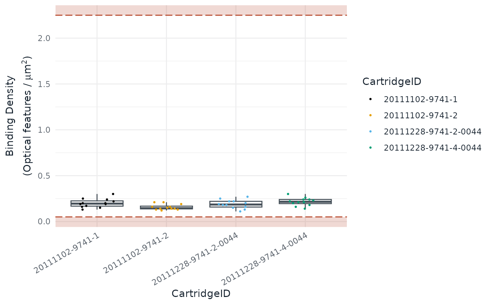

Draws any of the quality-control figures of the Shiny app
(visualise()) and of the HTML or PDF report (render()).
Usage
autoplot(
object,
type,
colour = "CartridgeID",
size = 0.5,
show_legend = TRUE,
show_outliers = TRUE,
outliers_factor = 1,
outliers_labels = NULL,
dark = FALSE
)Arguments
object: Anachoobject fromload_rcc()ornormalise().type: The plot to draw, one of:"BD": Binding Density."FoV": Field of View (imaging)."PCL": Positive Control Linearity."LoD": Limit of Detection."Positive": Positive controls."Negative": Negative controls."Housekeeping": Housekeeping genes."PN": Positive controls against negative controls."ACBD": Average counts against binding density."ACMC": Average counts against median counts."PCA12": Principal component 1 against 2."PCAi": Scree plot of the principal components."PCA": Planes of the first principal components."PFNF": Positive factor against negative factor."HF": Housekeeping factor."NORM": Normalisation factor. The line is a loess trend of the counts, fitted on the sample means once there are enough samples. The band around it is the 95% confidence interval of that trend, not the spread of the genes, so it is thin once the counts are normalised."Stability": geNorm stability of the housekeeping genes, seehousekeeping_stability(). The dashed line marks M = 1.5, the limit geNorm suggests for homogeneous samples. This plot ignorescolour,show_legend,show_outliersandoutliers_labels."RLE": Relative log expression of the normalised endogenous genes. This plot ignoressize,show_outliers,outliers_factorandoutliers_labels."BatchFactors": Normalisation factors by cartridge. This plot ignoresshow_outliers,outliers_factorandoutliers_labels."PCBatch": Share of each principal component explained by cartridge and date; seebatch_diagnostics(). Tiles with no value stay grey and unlabelled. This plot ignorescolour,size,show_legend,show_outliers,outliers_factorandoutliers_labels.
colour: The column ofnacho_samples(object)that colours the points.size: The point size, and the line width in the"NORM"plot.show_legend: IfFALSE, hide the colour legend.show_outliers: IfTRUE, draw the flagged samples as triangles in the accent colour: rust on a light background, amber on a dark one.outliers_factor: The size of the flagged samples, relative tosize.outliers_labels: The column ofnacho_samples(object)that labels the flagged samples, orNULLfor no labels. Labels implyshow_outliers = TRUE.dark: IfTRUE, draw the plot for a dark background.
Examples
autoplot(GSE74821, type = "BD")
